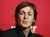

THE BEATLES
Biografía
The Beatles fue una banda de rock inglesa activa durante la década de 1960, y reconocida como la más exitosa comercialmente y críticamente aclamada en la historia de la música popular. Se Formó en Liverpool, en el año 1962. Enraizada en el skiffle y el rock and roll de los años cincuenta, la banda trabajó más tarde con distintos géneros musicales, que iban desde las baladas pop hasta el rock psicodélico, incorporando a menudo elementos clásicos, entre otros, de forma innovadora en sus canciones. La naturaleza de su enorme popularidad, que había emergido primeramente con la moda de la «Beatlemanía», se transformó al tiempo que sus composiciones se volvieron más sofisticadas. Se mantienen como el grupo con más números uno en las listas británicas, situando más álbumes en esta posición que cualquier otra agrupación musical. En 2004, la revista Rolling Stone los clasificó en el número uno en su lista de los «100 artistas más grandes de todos los tiempos». De acuerdo con la misma publicación, la música innovadora de The Beatles y su impacto cultural ayudaron a definir los años sesenta.
Miembros
- 
Paul Mccartney
Ringo Starr
George Harrison
Discografía
- Please Please Me (1963)
- With the Beatles (1963)
- A Hard Day's Night (1964)
- Beatles for Sale (1964)
- Help! (1965)
- Rubber Soul (1965)
- Revolver (1966)
- Sgt. Pepper's Lonely Hearts Club Band (1967)
- Magical Mystery Tour (1967)
- The Beatles (1968)
- Yellow Submarine (1969)
- Abbey Road (1969)
- Let It Be (1970)